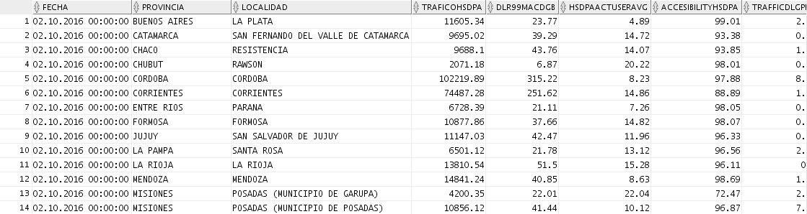
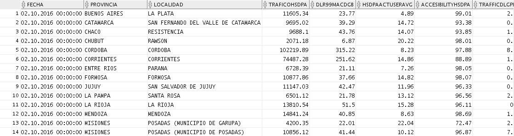

Reporte Bh Day¶
1. OBJETIVO¶
El presente documento buscar explicar y detallar el proceso que genera el Reporte a Nivel Bh Day.
2. ALCANCE¶
Áreas involucradas: Performance de Red
3. DEFINICIONES¶
- Falda: Servidor UNIX en donde se importan los XML desde el proveedor, y en donde se encuentra Smart. El nombre es falda.claro.amx.
4. DESCRIPCIÓN GENERAL¶
REPORTE A NIVEL BH DAY
Este reporte se utiliza para obtener los datos de las 3 tecnologías (GSM, UMTS, LTE) enviando un email que contiene 3 archivos excel con los datos y en el cuerpo del mensaje contiene los reportes de las diferentes tecnologías.
5. MACRO FLUJO DEL PROCESO¶

6. DESCRIPCIÓN DETALLADA¶
6.1. Datos de origen¶
- Server Origen y Path: falda.claro.amx , /calidad/Reportes/
- Frecuencia actualización: Frecuencia diaria
- Tipo de Archivo de Salida: xlsx
6.2. Datos Destino¶
- Server Destino: Falda
- Conversión de Archivos: No
- Tabla Files: No
- Tabla Auxiliar: No
- Frecuencia de corrida del proceso: 1 vez al día
- Regionales: No
- RAW Si/No: No
- Hour Si/No: No
- Day Si/No: Si
- BH Si/No: Si
- Países: No
- Directorio Destino (File System): /calidad/Reportes
6.3. Shell Copiar Archivos Origen a Destino y limpieza de los mismos¶
El script es el siguiente:
6.3. Listado de Tablas Utilizadas¶
Las tablas son las siguientes:
- CALIDAD_STATUS_REFERENCES
- UMTSC_NSN_HO_WCEL_DAY
- UMTSC_NSN_HO_RNC_DAY
- UMTSC_NSN_HO_ALM_DAY
- UMTSC_NSN_HO_MKT_DAY
- UMTSC_NSN_HO_PAIS_DAY
- UMTS_NSN_HO_WCEL_DAY
- UMTS_NSN_HO_RNC_DAY
- UMTS_NSN_HO_ALM_DAY
- UMTS_NSN_HO_MKT_DAY
- UMTS_NSN_HO_PAIS_DAY
- MULTIVENDOR_BTS_BH
- MULTIVENDOR_BSC_BH
- MULTIVENDOR_ALM_BH
- MULTIVENDOR_MARKET_BH
- MULTIVENDOR_PAIS_BH
- MULTIVENDOR_GPRS_BH
- MULTIVENDOR_GPRS_BSC_BH
- MULTIVENDOR_GPRS_ALM_BH
- MULTIVENDOR_GPRS_MKT_BH
- MULTIVENDOR_GPRS_PAIS_BH
- MULTIVENDOR_BTS_DAY
- MULTIVENDOR_BSC_DAY
- MULTIVENDOR_ALM_DAY
- MULTIVENDOR_MARKET_DAY
- MULTIVENDOR_PAIS_DAY
- MULTIVENDOR_GPRS_DAY
- MULTIVENDOR_GPRS_BSC_DAY
- MULTIVENDOR_GPRS_ALM_DAY
- MULTIVENDOR_GPRS_MKT_DAY
- MULTIVENDOR_GPRS_PAIS_DAY
- LTE_NSN_AVAIL_LCEL_BH
- LTE_NSN_PAQ_LCEL_BH
- LTE_NSN_SERVICE_LCEL_BH
- LTE_NSN_AVAIL_LCEL_DAY
- LTE_NSN_PAQ_LCEL_DAY
- LTE_NSN_SERVICE_LCEL_DAY
- LTE_NSN_AVAIL_NE_BH
- LTE_NSN_PAQ_NE_BH
- LTE_NSN_SERVICE_NE_BH
- LTE_NSN_AVAIL_NE_DAY
- LTE_NSN_PAQ_NE_DAY
- LTE_NSN_SERVICE_NE_DAY
- UMTSC_NSN_HO_WCEL_BH
- UMTSC_NSN_HO_RNC_BH
- UMTSC_NSN_HO_ALM_BH
- UMTSC_NSN_HO_MKT_BH
- UMTSC_NSN_HO_PAIS_BH
- UMTS_NSN_HO_WCEL_BH
- UMTS_NSN_HO_RNC_BH
- UMTS_NSN_HO_ALM_BH
- UMTS_NSN_HO_MKT_BH
- UMTS_NSN_HO_PAIS_BH
- UMTSC_NSN_HSDPA_WCEL_BH
- UMTSC_NSN_HSDPA_RNC_BH
- UMTSC_NSN_HSDPA_ALM_BH
- UMTSC_NSN_HSDPA_MKT_BH
- UMTSC_NSN_HSDPA_PAIS_BH
- UMTS_NSN_HSDPA_WCEL_BH
- UMTS_NSN_HSDPA_RNC_BH
- UMTS_NSN_HSDPA_ALM_BH
- UMTS_NSN_HSDPA_MKT_BH
- UMTS_NSN_HSDPA_PAIS_BH
- UMTSC_NSN_HSDPA_WCEL_DAY
- UMTSC_NSN_HSDPA_RNC_DAY
- UMTSC_NSN_HSDPA_ALM_DAY
- UMTSC_NSN_HSDPA_MKT_DAY
- UMTSC_NSN_HSDPA_PAIS_DAY
- UMTS_NSN_HSDPA_WCEL_DAY
- UMTS_NSN_HSDPA_RNC_DAY
- UMTS_NSN_HSDPA_ALM_DAY
- UMTS_NSN_HSDPA_MKT_DAY
- UMTS_NSN_HSDPA_PAIS_DAY
- UMTSC_NSN_MACD_WCEL_BH
- UMTSC_NSN_MACD_RNC_BH
- UMTSC_NSN_MACD_ALM_BH
- UMTSC_NSN_MACD_MKT_BH
- UMTSC_NSN_MACD_PAIS_BH
- UMTSC_NSN_MACD_WCEL_DAY
- UMTSC_NSN_MACD_RNC_DAY
- UMTSC_NSN_MACD_ALM_DAY
- UMTSC_NSN_MACD_MKT_DAY
- UMTSC_NSN_MACD_PAIS_DAY
- UMTSC_NSN_SERVICE_WCEL_BHC
- UMTSC_NSN_SERVICE_RNC_BHC
- UMTSC_NSN_SERVICE_ALM_BHC
- UMTSC_NSN_SERVICE_MKT_BHC
- UMTSC_NSN_SERVICE_PAIS_BHC
- UMTS_NSN_SERVICE_WCEL_BHC
- UMTS_NSN_SERVICE_RNC_BHC
- UMTS_NSN_SERVICE_ALM_BHC
- UMTS_NSN_SERVICE_MKT_BHC
- UMTS_NSN_SERVICE_PAIS_BHC
- UMTSC_NSN_SERVICE_WCEL_BHP
- UMTSC_NSN_SERVICE_RNC_BHP
- UMTSC_NSN_SERVICE_ALM_BHP
- UMTSC_NSN_SERVICE_MKT_BHP
- UMTSC_NSN_SERVICE_PAIS_BHP
- UMTS_NSN_SERVICE_WCEL_BHP
- UMTS_NSN_SERVICE_RNC_BHP
- UMTS_NSN_SERVICE_ALM_BHP
- UMTS_NSN_SERVICE_MKT_BHP
- UMTS_NSN_SERVICE_PAIS_BHP
- UMTSC_NSN_SERVICE_WCEL_DAY
- UMTSC_NSN_SERVICE_RNC_DAY
- UMTSC_NSN_SERVICE_ALM_DAY
- UMTSC_NSN_SERVICE_MKT_DAY
- UMTSC_NSN_SERVICE_PAIS_DAY
- UMTS_NSN_SERVICE_WCEL_DAY
- UMTS_NSN_SERVICE_RNC_DAY
- UMTS_NSN_SERVICE_ALM_DAY
- UMTS_NSN_SERVICE_MKT_DAY
- UMTS_NSN_SERVICE_PAIS_DAY
6.4. Pentaho¶
Estructura del proyecto:

- Proceso Pentaho End to End
Se crean un archivo Excel para cada tecnología que incluirá todas las consultas realizadas en las siguientes transformaciones:
- Proceso Pentaho GSM

- Proceso Pentaho UMTS
- Proceso Pentaho LTE

7. REPROCESO MANUAL¶
Para reprocesar se debe ejecutar por consola el script report.sh, los datos obtenidos serán de la semana completa:
El email muestra los archivos adjuntos en formato xlsx que contiene los datos mencionados anteriormente:
 

8. CONTROL DE CAMBIOS¶
| Fecha | Responsable | Ticket Jira | Detalle | Repositorio |
|---|---|---|---|---|